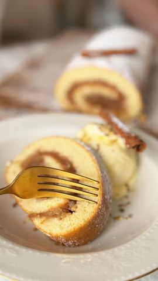

Moja beleška
SačuvanoSavršeno mirisan i mekan, ovaj rolat sa jabukama će osvojiti vaše srce već na prvi zalogaj! Evo recepta koji možete lako pripremiti: Sastojci:
Sastojci
- Za testo
- Za fil
Priprema
1️⃣ Ogulite jabuke i narendajte ih na krupno rende. 2️⃣ Dodajte začin za pitu od jabuka i šećer, pa pržite na tiganju oko 10 minuta. 3️⃣ Umutite jaja, so i šećer mikserom dok smesa ne postane svetla i penasta (oko 4 minuta). 4️⃣ U šerpi zagrejte mleko, maslac i vanilin šećer dok se maslac ne otopi. 5️⃣ U brašno dodajte prašak za pecivo i polovinu prosejte u smesu od jaja. Pažljivo izmešajte. 6️⃣ Dodajte mlečnu mešavinu i preostalo brašno, lagano mešajući dok se sve sjedini. 7️⃣ Tepsiju obložite papirom za pečenje. Rasporedite pržene jabuke ravnomerno po dnu, a preko njih sipajte smesu za testo. 8️⃣ Pecite na 180°C oko 20 minuta, dok ne dobije zlatnu boju. 9️⃣ Još topao rolat urolajte zajedno s papirom i ostavite da se ohladi. 🔟 Pospite šećerom u prahu po želji. Brzo, lako, jednostavno i preukusno 🥰 Recept @pieknytalerz_ Prijatno! 😋
Originalni opis sa Instagrama
Rolat sa jabukama 🍏🍎 Savršeno mirisan i mekan, ovaj rolat sa jabukama će osvojiti vaše srce već na prvi zalogaj! Evo recepta koji možete lako pripremiti: Sastojci: Za testo: • 3 jaja 🥚 • prstohvat soli 🧂 • 150 g šećera • 250 g pšeničnog brašna 🌾 • 2 ravne kašičice praška za pecivo • 150 ml mleka 🥛 • 50 g maslaca 🧈 • 1 kašika vanilin šećera Za fil: • 6-7 jabuka srednje veličine (oko 1kg) • 3 kašičice mešavine začina za pitu od jabuka (ili 2 kašičice cimeta) • 1 -2 kašike šećera Priprema: 1️⃣ Ogulite jabuke i narendajte ih na krupno rende. 2️⃣ Dodajte začin za pitu od jabuka i šećer, pa pržite na tiganju oko 10 minuta. 3️⃣ Umutite jaja, so i šećer mikserom dok smesa ne postane svetla i penasta (oko 4 minuta). 4️⃣ U šerpi zagrejte mleko, maslac i vanilin šećer dok se maslac ne otopi. 5️⃣ U brašno dodajte prašak za pecivo i polovinu prosejte u smesu od jaja. Pažljivo izmešajte. 6️⃣ Dodajte mlečnu mešavinu i preostalo brašno, lagano mešajući dok se sve sjedini. 7️⃣ Tepsiju obložite papirom za pečenje. Rasporedite pržene jabuke ravnomerno po dnu, a preko njih sipajte smesu za testo. 8️⃣ Pecite na 180°C oko 20 minuta, dok ne dobije zlatnu boju. 9️⃣ Još topao rolat urolajte zajedno s papirom i ostavite da se ohladi. 🔟 Pospite šećerom u prahu po želji. Brzo, lako, jednostavno i preukusno 🥰 Recept @pieknytalerz_ Prijatno! 😋 • • • #rolat #ukusnirecepti #ukusnahrana #jabuke